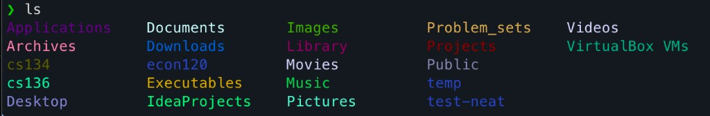

CLI · Shell · Homebrew · Cross-platform
colorBash
Color exact file and folder names in ls, not just file types.
Shell · PowerShell · Ruby formula · Homebrew · Scoop · AGPL-3.0
colorBash wraps interactive ls so specific names can keep their own colors.
Save rules with cb <name> <color>, randomize visible entries with cb random,
and keep unsupported ls modes safely falling back to the system command.
Install locally
git clone https://github.com/alexprofmutua/colorBash.git cd colorBash ./install.sh --configure-shell
- Shell
- PowerShell
- Homebrew
- Scoop

cb test_case red cb assets orange cb random ls